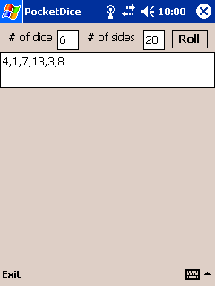
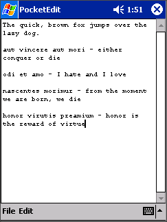
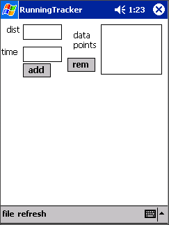
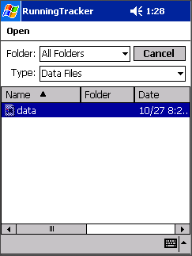
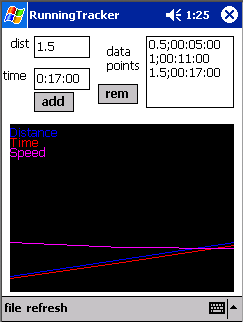
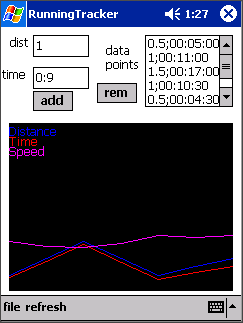

I wrote
a letter to Oluseyi about keeping the Lounge, complete with the original misspellings and misuse of homonyms. Oluseyi's reply comes first, to maintain the chronological consistancy of my site.
I recently stumbled upon a researcher at Northwestern Univeristy by the name of
Holger Winnemoeller. He has done some research in NPR Rendering, mostly optimizing existing NPR techniques. His
Master's Thesis Proposal talked about using optical illusions, in much the same way that I used them for my research project. I've since been in contact with Holger, he seems like a pretty interesting guy.
PocketDice for PocketPC is a little convenience program for anyone that does anything with dice. I play a number of games that can use any number of dice, so having this program is very handy. No more dice skittering all over everywhere.

PocketEdit for PocketPC is finished.
Unfortunately, the clipboard is not supported in the .NET Compact
Framework v1.0, so your clipboard data will not be available to other
applications.
I find PocketEdit to be a very handy application for editting text files.
Windows Mobile 2003 does not ship with a plain text editor, which can be
quite bothersome at times. With PocketEdit, I can edit HTML files while
on the go, and quickly view them in Pocket IE.
OH LOOK! A screeny!

I've put the finishing touches on
RunningTracker
for .NET Mobile capable PocketPC PDAs. Use
this page for discussion. Check out the screenies!

